من مبنى البلدية إلى المركز الصحي وساحات البلدة وشوارعها التي عرفها كل أهل عبسان الجديدة، هذه الصفحة مخصصة لتوثيق المرافق العامة والشوارع الرئيسية في البلدة، وسيتم استكمالها تباعًا بالأسماء والصور والمواقع.
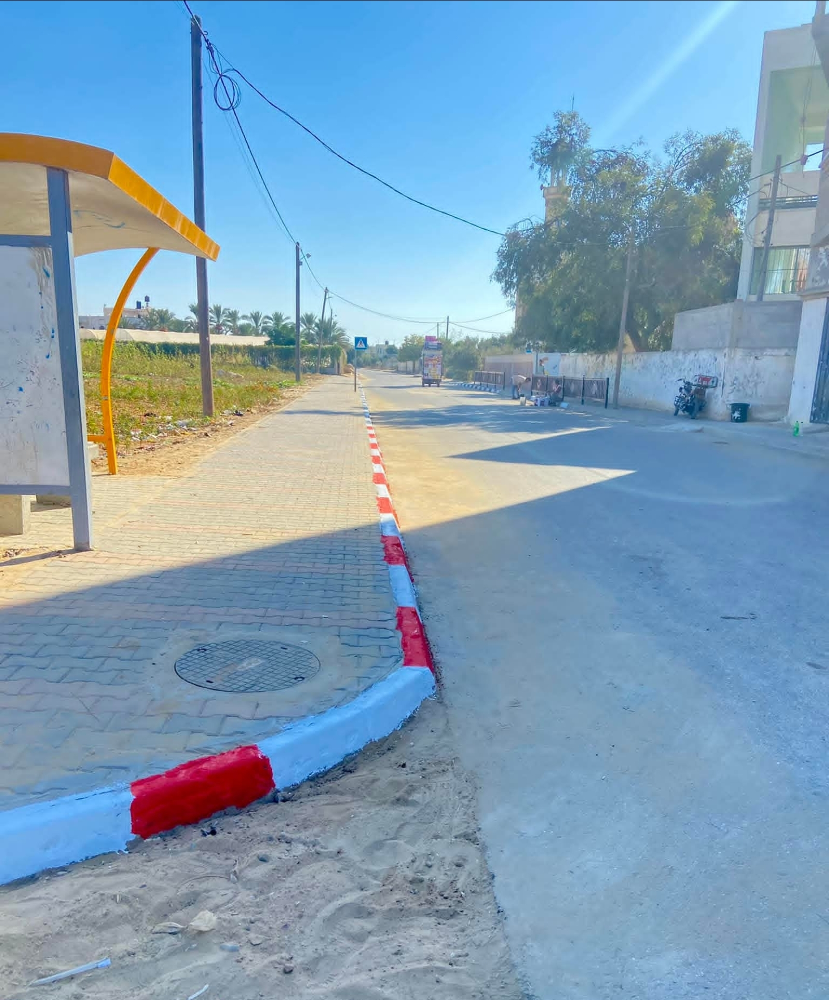
بالقرب من مسجد الشيخ عطيه
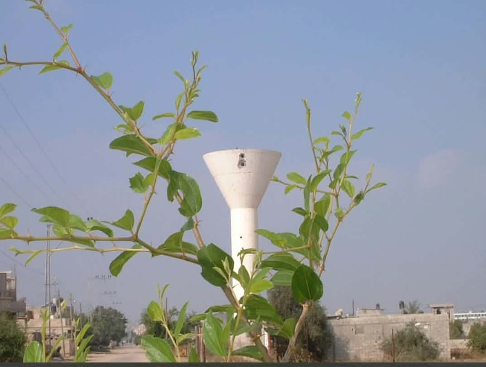
شرق عبسان الجديدة
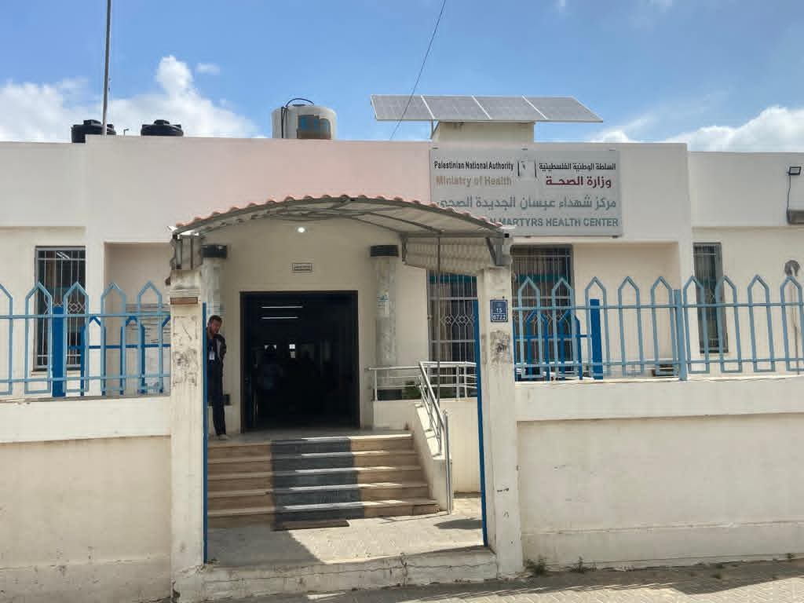
منطقة آل أبو طعيمة
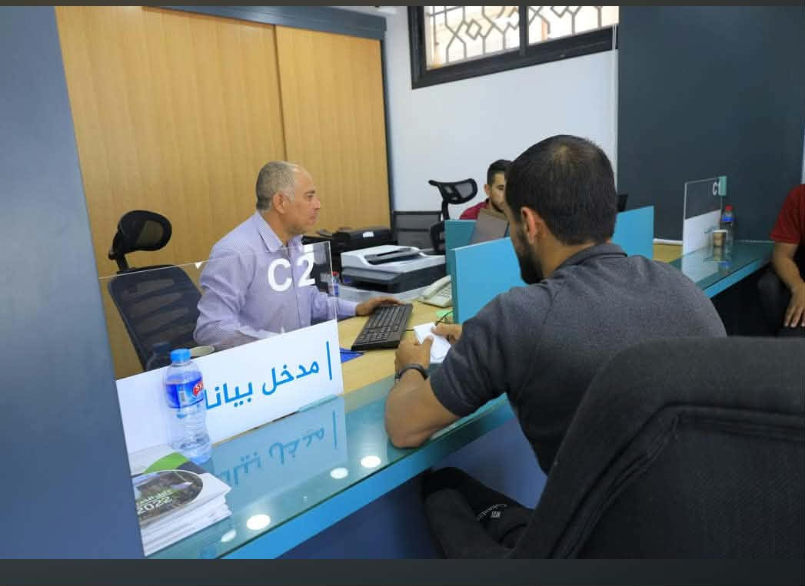
بلدية عبسان الجديدة
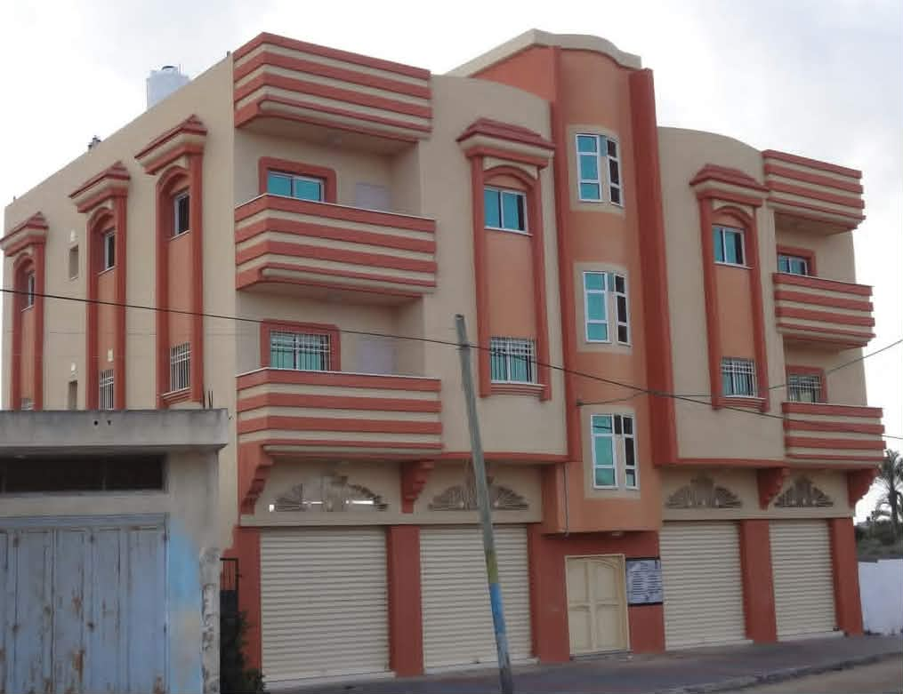
حارة آل عرفات
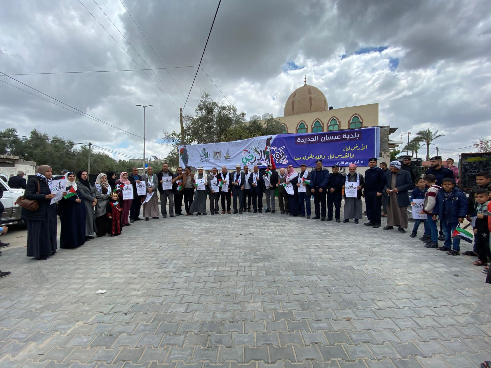
مسجد ابراهيم خليل الرحمن
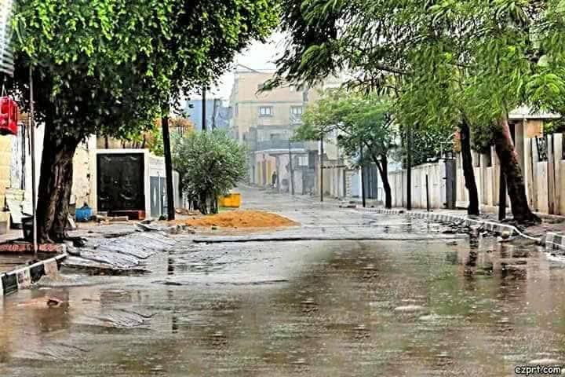
آل عرفات
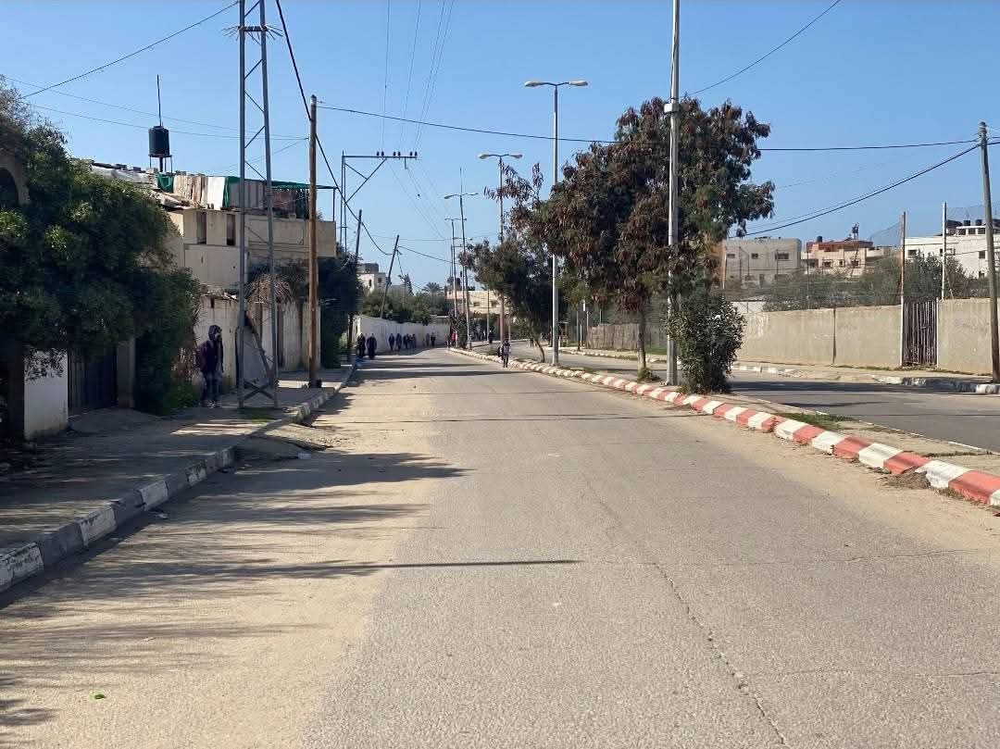
آل أبو عنزة الشرقي
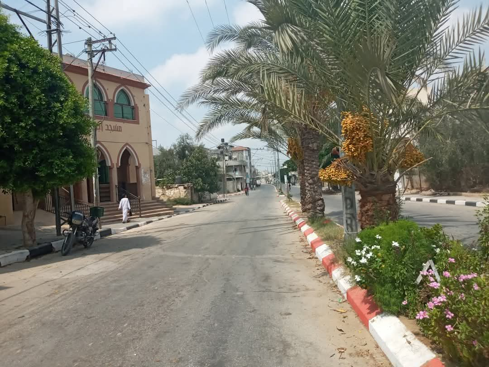
آل عرفات
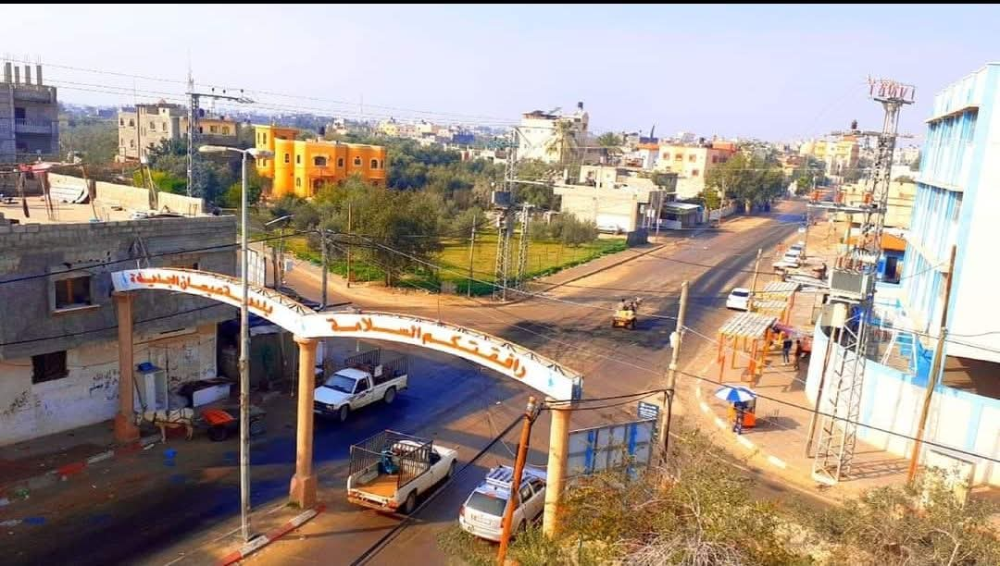
آل الدغمه
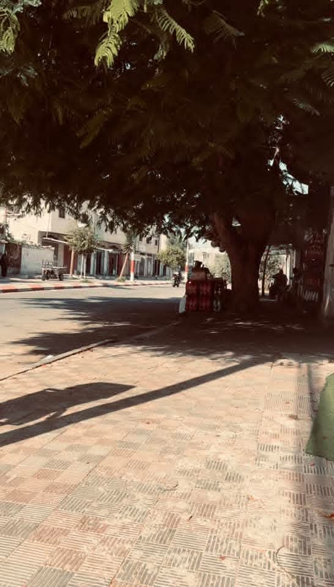
آل الدغمه
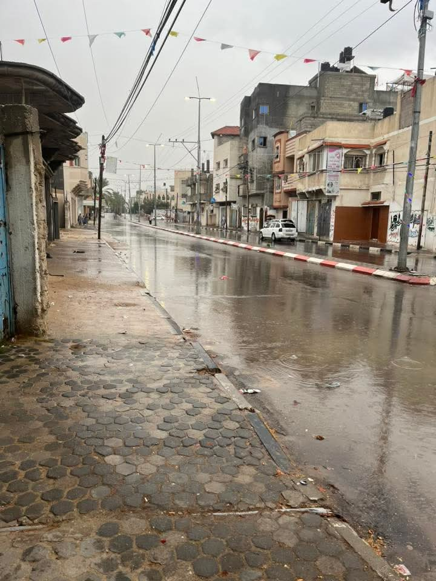
آل الدغمه